Self-reading
The analysis in the order it runs. Each step says what it does, what it found in this repository, and which report holds the whole of it.
A scope is one source-set directory or the repository's documentation. Every Java file in one is parsed, and only the names its author declared are taken. A name used here but declared elsewhere — String, List, assertThat — belongs to whoever declared it, and the parse is what tells the two apart. Files the parser cannot read are counted and named.
406 files were read.
Legibility — how much of the repository any resource can be cited for.
A rule set splits on case transitions, digit boundaries and separators, so citationSource yields citation and source. Where a compound has no such boundary, candidate splits are scored against a published word-frequency list and the commonest reading wins: userid reads as user and id rather than use and rid.
The vocabulary — the words this repository chose, against the words English and the platform chose for it.
WordNet holds nouns, verbs, adjectives and adverbs. A word with no entry there — of, and, which — carries grammar rather than subject matter and is dropped, and the same query returns the dictionary form, so citations and citation count together. Two resources then say what a word is about: WordNet Domains labels each sense of a word, and Wiktionary's topic vocabulary labels the headword. A word neither resource lists produces no vote. That is not a vote of zero, which would pull the result towards nothing; the word contributes nothing at all, and is counted in λ below.
λ = 0.992. At least one bundled resource can be cited for that share of 74,179 word occurrences, 75% of which are prose rather than declared names.
Legibility — how much of the repository any resource can be cited for.
Three weights multiply, and each is read off a published resource rather than chosen. Sense coverage is the share of a word's senses the resource labelled. Specificity is log(rank) / log(size) against the frequency list, so a rare word narrows a subject further than a common one. Phrase agreement is the geometric mean over the words of a name that agree on a subject, times the share of the name that agrees: cite alone is law, linguistics and publishing, and beside source it is one of them.
One declared name is one unit of evidence and one sentence of prose is another, whatever their length, so a long sentence cannot outweigh a short name by containing more words. The result is a distribution over subjects for each scope and for the repository as a whole, taken over everything that was observed rather than over what was placed: a phrase no resource could place keeps its whole unit, and a phrase whose words named so many subjects that none of them was settled keeps whatever they could not settle. Both stay in the denominator, because a reading that divided only by what it managed to place would report the same shares for a file it read and a file it did not. The chart draws the topics that earned a place: the inner ring is the topic resource's own hierarchy, the outer ring the labels the reading resolved, and a wedge is the share of the divergence that topic accounts for rather than how often it was written.

This repository reads as linguistics, computing, grammar. 76.0% of the mass this step observed was settled on no subject at all, and stays in the denominator of every share below.
The charts — both pictures this reading draws: what the repository is about, and where in a published field it writes.
Themes — the detail — the same reading with every scope, witness and site.
A topic written at the same density everywhere distinguishes nothing, so a scope is judged by how far its distribution departs from the repository's, measured in bits by Jensen–Shannon divergence. That distance is compared against 999 resamples of a scope the same size drawn from the same repository. A scope that does not beat its own field of chance draws is reported nowhere.
code-semantics-api/src/test/java stands 0.1990 bits out and writes more of linguistics; code-semantics-engine/src/main/java stands 0.0493 bits out and writes more of grammar, linguistics; lexicon/src/main/java stands 0.1751 bits out and writes more of grammar; lexicon/src/test/java stands 0.1517 bits out and writes more of linguistics
Themes — the detail — the same reading with every scope, witness and site.
The same distribution is compared against one built from each subject description a published scheme publishes. The nearest subject is reported only if it is nearer than the nearest a scheme of chance would have offered over 999 draws.
Computer Science, 0.3447 bits away, against 0.4100 bits from chance, so it stands apart from chance. The runner-up is Electrical Engineering and Systems Science at 0.4931.
Subjects — where the repository stands against 152 published subject areas.
A term taxonomy publishes the names practitioners of a field use, already formatted as identifiers. Both sides go through the same splitting rules and the longest published term at each position is taken, with no two matches overlapping. A single-word match counts only where the repository writes another concept from the same branch of the taxonomy. No match contributes to the distribution above: the matcher has been run on this repository only, which is one tree and therefore not a measurement.
The taxonomy — the published field as a tree, concept by concept, with what this repository wrote under each.
Terms — which branches of the field the repository occupies, and what it wrote there.
The evidence — every concept this repository writes, with the names and the lines it wrote them at.
Everything that failed a bar above is named here and printed nowhere else. A reading that showed only its survivors would read as a reading with nothing wrong with it.
documentation — 0.2457 bits, and 969 of 999 chance draws stood at least as far
Summary — what the reading shows, in one page.
Regenerate all of it with./gradlew selfRead. Every figure is a reading of one commit of one working tree, and the corpus includes these reports.